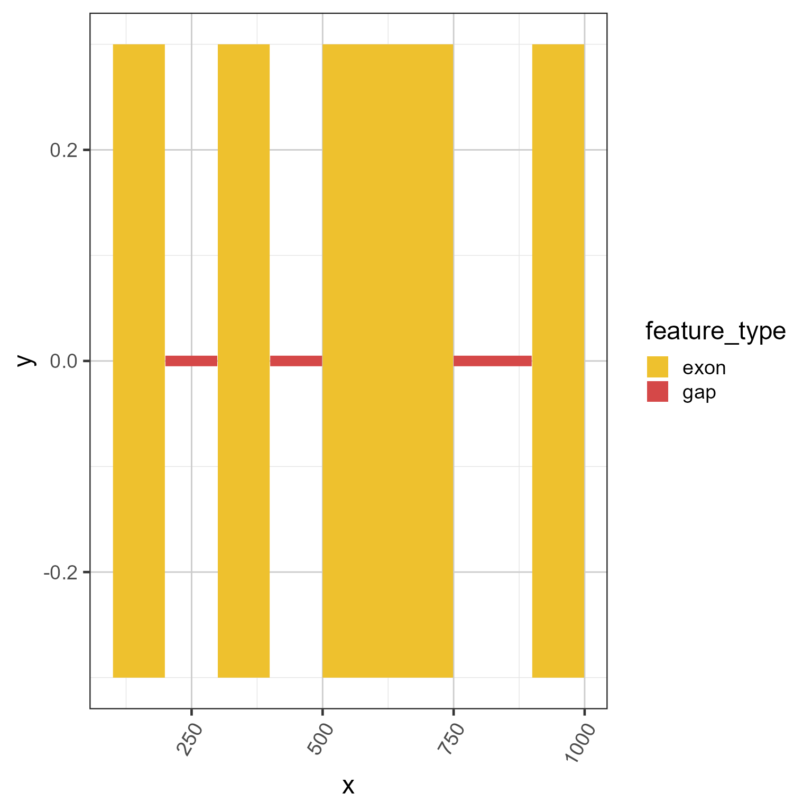

Sample exon data GRanges
Format
GRanges object where each segment represents one
exon for an arbitrary gene. It has one column of values,
"gene_name" used for Sashimi plot preparation.
See also
Other Splicejam data:
sjenvtest,
test_cov_gr,
test_cov_wide_gr,
test_exon_wide_gr,
test_junc_gr,
test_junc_wide_gr
Examples
# The code below is used to create the exon test data
suppressPackageStartupMessages(library(GenomicRanges));
suppressPackageStartupMessages(library(ggplot2));
test_exon_gr <- GRanges(seqnames=rep("chr1", 4),
ranges=IRanges::IRanges(
start=c(100, 300, 500, 900),
end=c(199, 399, 749, 999)),
strand=rep("+", 4),
gene_name=rep("TestGene1", 4));
names(test_exon_gr) <- jamba::makeNames(rep("exon", length(test_exon_gr)),
suffix="");
# To plot a simple GRanges object
ggplot(grl2df(test_exon_gr), aes(x=x, y=y, group=id, fill=feature_type)) +
geom_polygon() +
colorjam::theme_jam() +
colorjam::scale_fill_jam()
